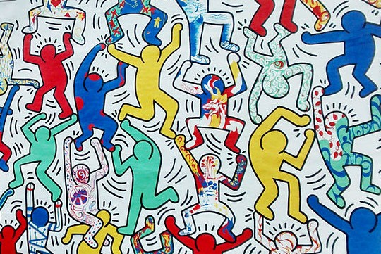
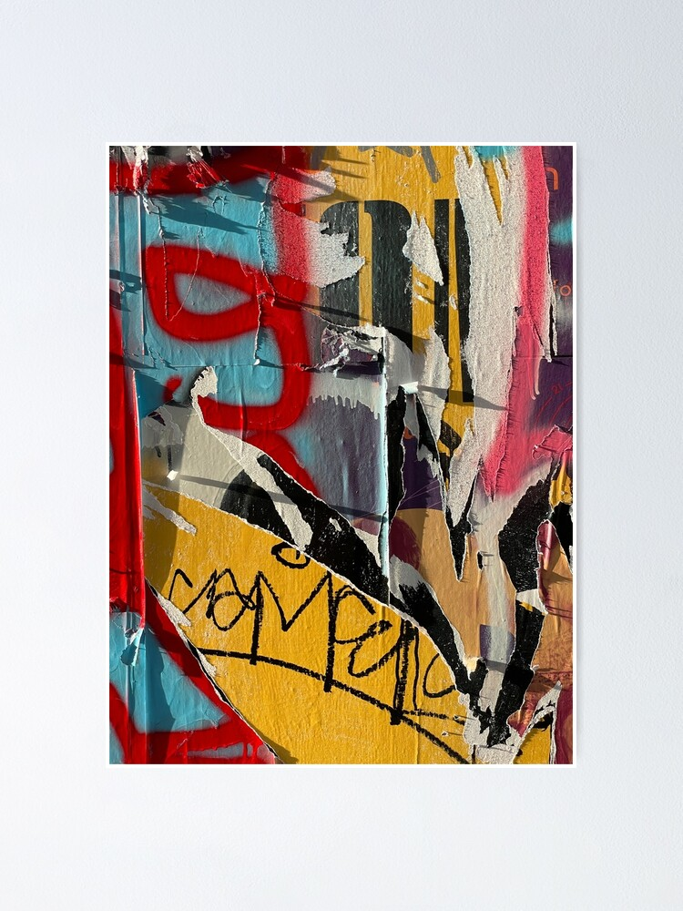
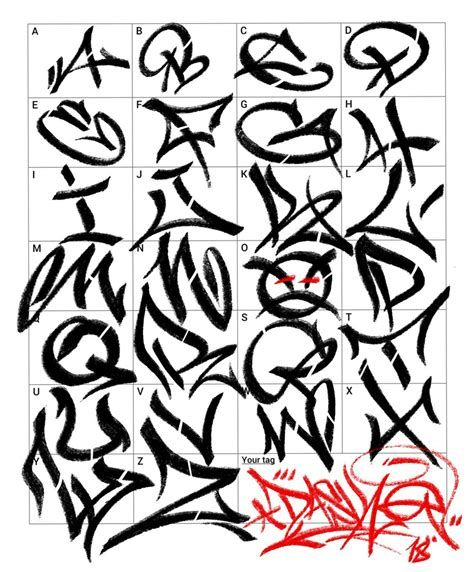

Tag/Firma Personale
Lasciare il segno
One-liner tag
La tag o firma personale è la trascrizione del soprannome(o del nome) del writer, solitamente monocolore ed in traccia unica, su un proprio pezzo o su un muro. La Tag Graffiti è classificabile sicuramente come l’esempio più semplice e comune di graffiti writing. Taggare deriva dal verbo “to tag”. Anche se “tagging” ha un significato molto più ampio, si può dire che la frase “lasciare la tag su un muro” indica quell’atto in cui i writer lasciano la propria firma sul muro.
È proprio il fatto di essere strettamente personale a rendere la tag graffiti qualcosa di difficilmente replicabile e copiabile. La tag di un artista è un movimento mnemonico del braccio e della mano dello stesso: ogni singola sfumatura, inclinazione e pressione del tappino di una bomboletta aerosol è un movimento quasi naturale per l’artista. Un writer può replicare la sua tag 10 volte su 10 fogli diversi, sarà sempre uguale.
Solitamente una tag graffiti è rapida (anche perchè spesso è lasciata illegalmente). Ci possono volere mesi per trovare il proprio stile e memorizzare la propria firma: migliaia di ripetizioni per abituare il braccio e la mano al movimento. La graffiti tag chiamata one-liner è quella eseguita senza mai alzare il dito dal tappino: questo permette di essere rapidi, ma richiede allenamento per essere precisi.
Stencil
Forme e colori
Materiali stencil
Lo stencil graffiti è una forma di street art che utilizza mascherine (stencil) per riprodurre immagini o scritte su muri, pavimenti, cartelli e altre superfici urbane. Questa tecnica ha guadagnato popolarità a partire dagli anni ’80, grazie a artisti come Blek le Rat e Banksy, diventando uno degli strumenti più iconici dell’arte urbana contemporanea.
Oltre all’aspetto tecnico, lo stencil graffiti ha un forte valore comunicativo. Molti artisti lo usano per trasmettere messaggi sociali, politici o ironici, sfruttando immagini provocatorie o simboliche che catturano subito l’attenzione. Grazie alla sua diffusione in diversi spazi pubblici, lo stencil diventa un linguaggio visivo capace di trasformare il paesaggio urbano e di influenzare lo sguardo dei passanti, mescolando arte, protesta e riflessione.
Per realizzare uno stencil graffiti sono necessari alcuni materiali fondamentali, scelti in base alla precisione desiderata e alla superficie su cui si lavora. Il primo elemento importante è il supporto su cui viene creato lo stencil. Si possono utilizzare cartoncini, facili da trovare e tagliare ma poco resistenti all’umidità e agli usi ripetuti, oppure fogli di plastica sottile o acetato, più durevoli e flessibili, ideali per stencil riutilizzabili. Un’alternativa interessante è la carta adesiva, che permette di fissare temporaneamente lo stencil direttamente sulla superficie.
Muralismo/Mural Art
Trasformare l'urbano
La mural art, o arte murale, è una forma d’espressione artistica che consiste nella realizzazione di dipinti o opere grafiche su grandi superfici, come muri di edifici, facciate, sottopassaggi e pareti urbane. Le sue origini risalgono a tempi antichissimi: basti pensare agli affreschi pompeiani, ai murales messicani del Novecento o alle pitture murali delle civiltà precolombiane. Oggi, la mural art è una delle espressioni più diffuse dell’arte contemporanea e ha un ruolo importante nel trasformare il paesaggio urbano.
A differenza di altre forme di street art, la mural art spesso nasce con il consenso delle comunità o delle istituzioni locali, diventando un modo per abbellire spazi degradati, riqualificare quartieri o trasmettere messaggi sociali e culturali. Gli artisti utilizzano diversi materiali e tecniche: vernici acriliche, spray, pennelli, rulli e piattaforme per raggiungere le altezze più impegnative. Ogni murale è pensato in relazione al contesto in cui si inserisce, creando un dialogo visivo con l’ambiente circostante e con le persone che lo abitano.
I murales sono spesso utilizzati come strumento di riqualificazione urbana, soprattutto in quartieri degradati o periferici. Attraverso l’arte, spazi anonimi o abbandonati vengono trasformati in luoghi colorati e pieni di significato, migliorando l’aspetto estetico e rafforzando il senso di appartenenza della comunità. Questo tipo di intervento non solo abbellisce l’ambiente, ma stimola anche il dialogo tra artisti e cittadini, contribuendo a creare identità e coesione sociale.
Wildestyle
Letture futuriste
Il wildstyle è uno degli stili più complessi e riconoscibili del graffiti writing, caratterizzato da lettere intrecciate, linee appuntite, frecce, curve e sovrapposizioni che spesso rendono difficile leggere il nome o il messaggio scritto. Nato a New York negli anni ’70, il wildstyle si è sviluppato come forma di competizione e sfida tra i writer, spingendoli a creare composizioni sempre più elaborate e spettacolari. Questo stile richiede grande abilità tecnica, precisione e senso del movimento, poiché ogni elemento del disegno contribuisce all’effetto finale, dando vita a una vera e propria danza di forme e colori. Il wildstyle non è solo decorazione, ma rappresenta anche un linguaggio codificato all’interno della comunità dei graffiti writer, un modo per affermare la propria identità artistica e il proprio livello di maestria.
Wheatpaste
Colla di grano
Il wheatpaste è una tecnica usata nell’arte di strada per applicare poster, disegni o collage su muri e superfici urbane utilizzando una colla a base di acqua e farina (da cui il nome, che significa letteralmente “colla di grano”). Questa tecnica è apprezzata per la sua semplicità, economicità e rapidità: l’artista prepara la colla mescolando farina, acqua e a volte zucchero, spalma il composto sul retro dell’opera o direttamente sulla parete, e infine fissa il foglio alla superficie.
Il wheatpaste permette di realizzare interventi temporanei ma di grande impatto visivo, spesso utilizzati per diffondere messaggi politici, sociali o ironici. Negli anni, molti street artist famosi, come Shepard Fairey, hanno reso questa tecnica parte integrante del proprio linguaggio espressivo.
Nonostante la sua apparente fragilità, il wheatpaste resiste abbastanza bene agli agenti atmosferici, trasformando i muri della città in spazi di comunicazione effimera e collettiva.
Type Abecederio
Tracce antiche
La tipografia nella cultura di strada ha un ruolo centrale, perché attraverso lettere e parole gli artisti comunicano messaggi, identità e appartenenze. Nei graffiti, la scrittura non è mai solo funzionale, ma diventa essa stessa arte: le lettere vengono trasformate, deformate, intrecciate e arricchite di effetti grafici fino a diventare quasi irriconoscibili, come accade nel wildstyle.
Anche negli stencil, nei poster wheatpaste e nei murales, la tipografia viene usata in modo creativo per rafforzare i contenuti e catturare l’attenzione del pubblico. Le scritte di strada possono essere nomi, slogan, dichiarazioni politiche, versi poetici o semplicemente firme (tag), ma sempre con un forte impatto visivo. Ogni scelta tipografica – dallo stile delle lettere al loro colore e posizionamento – contribuisce a definire il tono e l’identità dell’opera.
In questo modo, la tipografia nella cultura di strada diventa molto più di uno strumento comunicativo: è un mezzo espressivo che unisce estetica, messaggio e appartenenza culturale.
I font graffiti sono stili tipografici ispirati all’estetica della street art e dei graffiti, utilizzati non solo sui muri ma anche in grafica digitale, poster, abbigliamento e design urbano. Nati dall’osservazione delle scritte realizzate a mano dai writer, questi font traducono in forma digitale le caratteristiche tipiche delle lettere di strada: linee dinamiche, forme spigolose o curve, sovrapposizioni, effetti tridimensionali, ombre e sfumature. Esistono font che imitano lo stile semplice e diretto dei tag, altri che riprendono la complessità del wildstyle, e altri ancora che si ispirano alle scritte a spray o agli stencil.